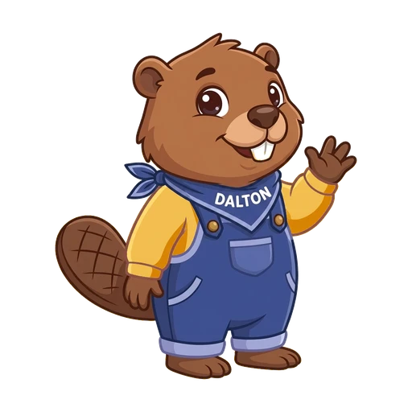

Muziek, tekst en geluid

Deze pagina is je leidraad voor vandaag. Je groep legt de clips in de vorm van een trailer en geeft de trailer een titel, overgangen en muziek. Er staan geen punten op.
Wat heb je nodig?
-
 De opdracht in Google Classroom
De opdracht in Google ClassroomHier vind je de lespagina. Op het einde klik je hier op Markeren als klaar.
-
Deze lespagina
Hier lees je wat je moet doen, stap voor stap. Bij elke stap staat wie monteur is.
-
Het Canva-ontwerp van je groep
Hier monteer je. Je gsm met de Canva-app heb je nodig voor een clip die er nog niet in staat. Oortjes ook, voor de muziek.
Canva zelf open je in stap 1, in een tabblad van Chrome. Je hoeft niets in te leveren.
Dit maak je vandaag
Jullie trailer in drie lagen: de titel bovenaan, de clips in vijf blokken in het midden, en muziek eronder die zacht begint en zacht eindigt.
Na deze les kan je
- je clips in de vijf blokken van een trailer leggen, zonder het einde te verklappen;
- een titel en een overgang toevoegen in Canva;
- muziek uit Canva toevoegen, zachter zetten dan de stemmen en de titel en de maker noteren.
Vast? Probeer het in deze volgorde
- Klik in de stap op Toon stapjes
- Je groep
- Je leraar